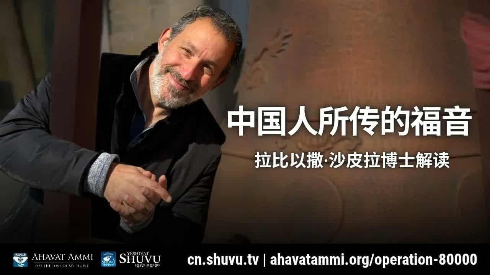

中国人所传的福音 ── 你们的名字记载在希伯来圣经里 The Gospel as Transmitted by the Chinese — Your Names Are Written in the Hebrew Bible
在「分辨之时代」(Birurim, בירורים) 里，沙皮拉拉比博士打开《以赛亚书》四十九章第一节，论证遥远的「众海岛」与「远方的众民」正指向今日的华人余民，并预言一条从中国通往耶路撒冷的「新丝绸之路」。 In the “age of Birurim” (בירורים, “sifting”), Rabbi Dr. Shapira opens Isaiah 49:1 to argue that the distant coastlands and peoples from afar point at today's Chinese remnant — and that a “new Silk Road” will run from China back to Jerusalem at the Messiah's return.
在一个为华人门徒举办的下午聚会里，沙皮拉拉比博士以一句让全场屏息的宣告开场：「你们的名字是记载在希伯来圣经里面的。」 这并不是修辞——他指着以赛亚书四十九章第一节中那遥远的「众海岛」(iyyim, איים) 与「远方的众民」(ammim merachok, עמים מרחוק)，论证：先知以赛亚在两千六百年前 (中国周朝)，就已经向今日的华人余民说话。在他的图像里，「分辨之时代」(Birurim, בירורים) 已经临到——一条从中国走向锡安的「新丝绸之路」正在被建造，而你正是这条路上的一员。 Opening an afternoon session before a group of Chinese disciples, Rabbi Dr. Shapira drops a sentence that hushes the room: “Your names are recorded in the Hebrew Bible.” This is not rhetoric. He points at Isaiah 49:1 — at the distant “coastlands” (iyyim, איים) and the “peoples from afar” (ammim merachok, עמים מרחוק) — and argues: 2,600 years ago, in the time of China's Zhou Dynasty, the prophet Isaiah was already speaking to today's Chinese remnant. In his picture, the “age of Birurim” (בירורים, “sifting”) has arrived — and a “new Silk Road” is being built from China toward Zion. You stand on that road.
一、Birurim 的时代 ── 万物的本质都要被显露I. The Age of Birurim — When the Essence of Everything Is Revealed
拉比给这个时代起了一个犹太传统里非常古老的名字：「Birurim 的时代」（בירורים，「分辨、筛选、显露」之意）。这个词在卡巴拉(Kabbalah, קבלה) 与犹太哲学里指一个特定的过程：神把圣洁的火花(nitzotzot, ניצוצות) 从掩盖之中抽离出来，让每一件事物、每一个人、每一种思想的本质都暴露在光中。 The rabbi gives our era an ancient name from Jewish tradition: “the age of Birurim” (בירורים, “sifting, examination, revealing”). In Kabbalah (קבלה) and Jewish philosophy the term names a specific process: God draws the holy sparks (nitzotzot, ניצוצות) out of their concealment, so that the essence of every thing, every person, and every idea is exposed to the light.
「我们在所处的这个年代，这个时代叫做 Birurim 的时代。Birur 这个词就是被查验、被检验的过程。Birur 这个词就是辨别、鉴别。这个时候就是一个东西、一个人的本质要被显现出来。」——沙皮拉拉比博士 “The era we are living in — this age is called the age of Birurim. The word Birur means the process of being examined, being tested. The word Birur means discernment, identification. This is a time when the essence of a thing, or of a person, is to be revealed.”— Rabbi Dr. Itzhak Shapira
在Birurim的时代里，没有什么能够长久地戴着面具。教会的、政权的、个人的——所有的伪装都在风中。这既是审判，也是怜悯：审判的是「外貌」，怜悯的是「本相」。「Birur」同时是「真相被看见」的时刻，也是「真相终于得以发光」的时刻。 In the age of Birurim, nothing wears a mask for long. Whatever the disguise — ecclesial, political, personal — the wind is rising. It is both judgment and mercy: judgment of the appearance, mercy on what is real underneath. Birur is at once the moment the truth is seen, and the moment the truth is finally able to shine.
拉比把这个犹太式的末世感铸进他对华人余民的呼召中：「因为我们活在 Birurim 的时代，所以你们这一群人现在的觉醒才有意义——本质正在被显露，而你们的本质是「神古老就拣选的远方之民」。」 The rabbi forges this Jewish end-time sensibility into his call to the Chinese remnant: because we live in the age of Birurim, therefore the awakening among you carries meaning — essences are being revealed, and your essence is “the distant people whom God chose from ancient days.”
二、《以赛亚书》四十九章 1 节 ── 论证的根基II. Isaiah 49:1 — The Verse on Which Everything Rests
拉比起身，请人递上希伯来文圣经，然后用希伯来语读出以赛亚书 49:1。这一节是他整个论点的磐石： The rabbi stands, asks for the Hebrew Bible, and reads Isaiah 49:1 in Hebrew. This verse is the bedrock of his entire argument:
「众海岛啊，当听我言！远方的众民啊，留心而听！自我出胎，HaShem 就选召我；自出母腹，他就提我的名。」——以赛亚书 49:1 “Listen, O coastlands, to me; and pay attention, you peoples from afar. From the womb HaShem called me; from the body of my mother He named me.”— Isaiah 49:1
拉比强调希伯来文里两个关键词：iyyim（איים，「众海岛」、「远方的海岸地」）和 ammim merachok（עמים מרחוק，「远方的众民」）。在以赛亚的语境里，这些指的是地极的国度——不是巴比伦，不是埃及，不是亚述，而是被这一切已知文明更远的地方。从耶路撒冷向东走、再向东走、再向东走——抵达的，是中国。 The rabbi presses two Hebrew words: iyyim (איים, “coastlands, distant shores”) and ammim merachok (עמים מרחוק, “peoples from afar”). In Isaiah's geography these mark the ends of the earth — not Babylon, not Egypt, not Assyria, but somewhere further than every known civilization. Walk east from Jerusalem, then east again, then east again — and you arrive in China.
拉比指出：以赛亚先知发出这段预言时，约为公元前 600 年——那正是中国周朝的年代。先知和中国，并不在彼此的视野中；但在 HaShem（השם，「那名」，对神圣名 YHWH 的敬称）的视野中，这一群「远方众民」已经被「自母腹」就提名呼召。 The rabbi points out: Isaiah uttered this oracle around 600 BCE — the era of China's Zhou Dynasty. The prophet and the Chinese were invisible to each other; but in the eyes of HaShem (השם, “The Name,” the reverent substitute for YHWH), this distant people was already “called from the womb, named from the body of the mother.”
三、Tzion ── 不只是一座城，更是全人类的标记III. Tzion — Not Only a City, but a Sign for All Humanity
拉比转过来解释「锡安」（Tzion, ציון）这个词。他指出，希伯来文 tziyyun（ציון）一词的根义并不只是「那座山」、「那座城」——它本身就有「标记、路标、纪念碑」的意思（参以西结书 39:15 用同一个字根表示「路标」）。换言之，锡安不只是一个地理坐标——锡安是神为全人类所立的「标记」。 The rabbi turns to the word “Zion” (Tzion, ציון). He points out that the Hebrew root tziyyun does not only mean “that mountain” or “that city” — it carries the sense of a marker, signpost, monument (compare Ezekiel 39:15, where the same root means “signpost”). Which is to say: Zion is not only a geographic coordinate — Zion is the signpost God set for all humanity.
拉比的应用是直接的：你看见「锡安」这个词，要会问——这是谁的标记？标记着什么？ 答案是：它是全人类的标记，标着神计划的中心。 谁回应这个标记，谁就回应了神在历史中的核心动作。1948 年以色列的复国——不是政治新闻，而是路标被竖立起来。1967 年六日战争后犹太人重回西墙——不是军事胜利，而是路标被擦亮。 The rabbi's application is direct: when you encounter the word “Zion,” learn to ask — whose signpost? marking what? Answer: it is the signpost for all humanity, marking the center of God's plan. Whoever responds to the signpost responds to God's central movement in history. The 1948 founding of Israel is not political news — it is the signpost being planted. The return of the Jews to the Western Wall after the 1967 Six-Day War is not a military victory — it is the signpost being polished.
「锡安这个单词有个意思，就是个标记。谁的标记？什么的标记？是全人类的，让全人类明白神的计划的中心是什么。」——沙皮拉拉比博士 “This word Zion has a meaning — it is a sign. Whose sign? A sign of what? It is the sign for all humanity, so that all humanity can understand the center of God's plan.”— Rabbi Dr. Itzhak Shapira
对于华人基督徒，这意味着：当你转向耶路撒冷祷告、当你为以色列代祷、当你在自己的城市为以色列发声——你不是在做一件「亲犹太」的政治姿态。你是在看见那块路标，并按它指示的方向调整自己。这是一种神学意义上的方向感。 For a Chinese Christian this means: when you turn to Jerusalem in prayer, when you intercede for Israel, when you speak up for her in your city — you are not performing a “pro-Jewish” political gesture. You are seeing the signpost and aligning yourself with what it points to. This is a theological orientation, not a political alignment.
四、1948 与 1967 ── 预言时钟开始转动IV. 1948 and 1967 — When the Prophetic Clock Began to Move
拉比在这一段非常具体地把他自己的家族故事接进末世预言。他的家庭来自巴格达——他的祖母出生于伊拉克的巴士拉(Basra)，那里曾有一个庞大的犹太社群（数千年历史，可追溯至巴比伦之囚）。他的父亲也不是在以色列出生的；他们家是在 1948 年回到应许之地的。 The rabbi here grounds the prophetic clock in his own family story. His family came from Baghdad — his grandmother was born in Basra, Iraq, where a Jewish community stretched back thousands of years, all the way to the Babylonian exile. His father, too, was not born in Israel. His family made aliyah in 1948.
这并不是一段私人轶事——它是拉比论点的证据。aliyah（עלייה，「归回」）是先知预言中以色列被列国驱散后必要重新聚集的一个核心元素。拉比的家族从巴比伦古代的犹太社群中，真的在 1948 年回到了应许之地——这是以赛亚、耶利米、以西结的预言已经被父辈一代亲身走过的证据。 This is not personal anecdote — it is evidence in his argument. Aliyah (עלייה, “going up,” return) is a core element of prophetic Scripture: Israel, scattered among the nations, must be regathered. The rabbi's family — direct descendants of the ancient Babylonian Jewish community — actually walked back to the Promised Land in 1948. This is the prophecy walked out in one generation of fathers and mothers.
之后是 1967。拉比强调：「在 2000 年后，犹太人第一次可以进入西墙。他们可以祷告。这是全世界正在发生的一场预言中的事件的开头。」 西墙重归犹太人手中并不是「军事行动」，而是路标重新被擦亮的时刻——而那一刻之后，列国 (the nations) 开始觉醒。 Then 1967. The rabbi presses: “For the first time in 2,000 years, the Jews could enter the Western Wall. They could pray. This is the opening of a prophetic event unfolding worldwide.” The return of the Wall is not a “military operation” — it is the signpost polished again. And from that moment onward, the nations began to awaken.
这场列国的觉醒不全是犹太人——大部分是基督徒。1967 年之后，全世界的基督徒开始重新思考自己信仰的「根」(shoresh, שורש)：希伯来语圣经、犹太节期、犹太语境下的耶稣（耶书亚 / Yeshua, ישוע）——这些不再是「旧约的背景」，而是「我们信仰的根」。这场觉醒还没有结束。而它的下一波，按拉比的预言，就在中国。 And that awakening was not chiefly Jewish — it was mostly Christian. After 1967, Christians worldwide began re-examining the root (shoresh, שורש) of their faith — the Hebrew Bible, the feasts of Israel, Jesus in his Jewish context (Yeshua, ישוע). These stopped being “Old Testament background” and became “the root of our faith.” That awakening is not over. And its next wave, on the rabbi's reading, breaks in China.
五、新丝绸之路 ── 从中国到耶路撒冷V. The New Silk Road — From China to Jerusalem
拉比的图像在这里变得非常具体：当弥赛亚再来的时候，另一条丝绸之路将被建立——而这一次，它从中国开始。 Here the rabbi's image grows concrete: when the Messiah returns, another kind of Silk Road will be established — and this time, it begins in China.
「弥赛亚再来的时候，有一个事情会发生。有一条另外一种的丝绸之路将被建立，就是从中国开始的。」——沙皮拉拉比博士 “When the Messiah returns, something will happen. Another kind of Silk Road will be established, starting from China.”— Rabbi Dr. Itzhak Shapira
古代的丝绸之路从长安出发，把丝绸、纸、火药、瓷器送向西方；它把中国的产物带向耶路撒冷之外的世界。拉比所说的「新丝绸之路」逆转了这个方向——它不是把物品从中国运往世界，而是把属灵的丰盛从中国运回耶路撒冷。古丝路是物质的；新丝路是属灵的。古丝路把中国送给世界；新丝路把中国送回锡安。 The ancient Silk Road departed from Chang'an, carrying silk, paper, gunpowder, porcelain westward — sending China's products out to the world beyond Jerusalem. The rabbi's New Silk Road reverses the direction. It does not ship goods from China to the world — it carries spiritual abundance from China back to Jerusalem. The old Silk Road was material; the new is spiritual. The old sent China to the world; the new sends China back to Zion.
这是一幅意涵巨大的图像。它意味着中国教会的复兴并不只是「中国基督徒人数增加」——它有一个明确的方向：回到根源，回到锡安。 它意味着这场觉醒不是孤立的灵性事件，而是整个末世救赎计划的一段。中国不是终点；中国是路。 This is an image of enormous weight. It means the revival of the Chinese church is not merely “the Chinese Christian population growing.” It has a direction: back to the root, back to Zion. It means this awakening is not an isolated spiritual event — it is a stage in the entire end-time redemption. China is not the terminus. China is the road.
六、「众海岛」与「远方的众民」── 这真的是中国吗？VI. Iyyim and Ammim Merachok — Is This Really China?
拉比在这里直接面对一个会被听众想到的反对：「许多神学家会说，以赛亚 49:1 里的『众海岛』、『远方的众民』并不是指今天的中国。」 拉比承认这个反对——以赛亚书里没有出现「中国」这两个字——但他做出一个关键的语义区分： The rabbi here meets a likely objection head-on: “Many theologians will say that the ‘coastlands’ and ‘peoples from afar’ in Isaiah 49:1 do not refer to today's China.” He grants the objection — the word “China” does not appear in Isaiah — but draws a sharp semantic distinction:
「他们说的是中国人。这有一个区别。我们说的不是一块土地，我们说的是个民族。而世界上只有这么一群人，他们被称为是中国人。就是你们。事实上，圣经记载的这段预言是关乎末世，所以让我相信他说的就是今天的中国人。」——沙皮拉拉比博士 “They speak of the Chinese people. There is a distinction. We are not talking about a piece of land; we are talking about a people, an ethnicity. And there is only one group of people in the world who are called ‘Chinese people.’ That is you. In fact, this prophecy recorded in the Bible concerns the End Times — therefore, it makes me believe that he is speaking of today's Chinese people.”— Rabbi Dr. Itzhak Shapira
拉比的论证有三步：
一、 经文说的不是「一块土地」(土地, aretz, ארץ)，而是「一群民族」(民, am, עם；众民, ammim, עמים)。
二、 这群「远方的众民」是末世的预言对象——以赛亚 49 章紧接着第二节就说「祂使我的口如快刀，将我藏在祂手荫之下」，是一段弥赛亚仆人之歌。
三、 在末世的当下，地球上只有一群人能稳定地被全世界称为「中国人」——他们就是被先知所看见的那群。
The rabbi's argument runs in three steps:
One: the text speaks not of a piece of land (aretz, ארץ) but of a people (am, עם; peoples, ammim, עמים).
Two: these “distant peoples” are the prophetic addressees of the end times — Isaiah 49 unfolds immediately into a messianic Servant Song (“He made my mouth like a sharp sword, in the shadow of His hand He hid me…”).
Three: in the present end-times moment, only one group on the planet is stably called “Chinese people” worldwide — and they are the ones the prophet saw.
这是一段需要分辨地承接的drash。我们要诚实地说：以赛亚书并没有在字面层面 (peshat) 点名中国人。但拉比的应用并非凭空——它建立在两条peshat层面就立得住的基础上：(a) 以赛亚 49 章的呼召确实是向远方众民；(b) 末世以色列的复兴确实包括「众民归回根源」(参以赛亚 60、66 章；撒迦利亚 8:23)。在peshat所设的舞台上，「中国人」是一个合理且令人震动的drash。 This is drash that should be received with discernment. Honestly: Isaiah does not, at the peshat level, name the Chinese people. But the rabbi's application is not built on air — it rests on two peshat-level truths: (a) Isaiah 49 truly addresses distant peoples; (b) Israel's end-time restoration truly involves nations returning to the root (cf. Isaiah 60, 66; Zechariah 8:23). On the stage peshat sets, “the Chinese people” is a plausible and arresting drash.
七、中国土地上的犹太-基督根源 ── 一个被遗忘的历史VII. Judeo-Christian Roots in Chinese Soil — A Forgotten History
拉比作了一个让人惊讶的陈述：「在中国，从很早古老的年代就有一个犹太基督的根源一直扎根在这片土地上，把所有的人都吸引到耶路撒冷的方向。」 这并不是一个完全的浪漫化——历史确实留下了几条痕迹： The rabbi makes a startling assertion: “In China, from very ancient times there has been a Judeo-Christian root deeply embedded in this land, drawing all people toward Jerusalem.” This is not pure romanticism — the historical record does leave traces:
开封犹太人。 自宋朝起，开封便有一支犹太社群，建有犹太会堂（最早记载约公元 1163 年），保留了希伯来经卷与节期实践，延续将近八百年。即使在文化高度同化之后，他们仍然记得自己是「以色列子孙」。
景教（聂斯托利派基督教）。 公元 635 年，叙利亚的景教传教士阿罗本一行抵达长安；唐太宗准其传教，并立《大秦景教流行中国碑》(781 年) 见证。这是一段闪族-阿拉米传统在中国土地上扎根的早期记录。
更晚的客家与穆斯林群体中的「记忆碎片」。 部分客家族谱与回族传统里，至今仍保留着指向「西来之地」(指中亚/中东) 的口述传承。
The Kaifeng Jews. From the Song Dynasty onward, a Jewish community lived in Kaifeng. They built a synagogue (earliest record c. 1163 CE), preserved Hebrew scrolls and feast practices, and persisted nearly eight hundred years. Even after deep cultural assimilation, they remembered themselves as “the children of Israel.”
Jingjiao (Church of the East / Nestorian Christianity). In 635 CE the Syrian missionary Alopen and his party reached Chang'an; Emperor Taizong of Tang permitted their preaching, and the Xi'an Stele (781 CE) — “The Monument of the Diffusion of the Luminous Religion of Da Qin” — testifies to it. This is an early record of a Semitic-Aramaic tradition rooting in Chinese soil.
Memory fragments among later Hakka and Hui populations. Certain Hakka genealogies and Hui Muslim traditions still preserve oral memories pointing toward “the Western Lands” (Central Asia / the Middle East).
我们需要诚实：这些线索都真实存在，但说「一个连续的犹太基督根源一直扎根，把所有的人吸引到耶路撒冷」是一个神学性的陈述，而不是史学性的结论。拉比的陈述是解读历史的方式，不是历史本身。但他的应用仍然有它的力量：中国的土地并不是一张空白的纸；它是一片已经被远古的属灵脚印踩过的土地。 Honesty requires this: every one of these traces is real, but to say “a continuous Judeo-Christian root has been embedded, drawing all people toward Jerusalem” is a theological statement rather than a historiographical conclusion. The rabbi is offering a way of reading history, not history itself. Still his application carries weight: the soil of China is not a blank sheet of paper — it is land already trodden by ancient spiritual footprints.
拉比的图像因此变得更清晰：他不是把基督信仰第一次带进中国——他是把那已经古老存在的「指向耶路撒冷的指南针」重新校准。新丝绸之路并不是新铺的——它是被重新唤醒的。 The rabbi's picture sharpens here: he is not bringing the Christian faith into China for the first time — he is recalibrating an ancient compass that already points toward Jerusalem. The New Silk Road is not freshly paved — it is being reawakened.
八、罗马书 11 章的犹太基因 ── 接枝、丰满、合一VIII. The Jewish Gene of Romans 11 — Engrafted, Filled, United
拉比向听众推荐他的著作《罗马书 11 章的犹太基因》。这不是顺带的书目推介——它是他整段教导的神学骨架。在罗马书 11 章里，保罗用橄榄树(zayit, זית) 的图像说明：以色列是天然的树根，外邦信徒是从野橄榄被接枝(egkentridzō, ἐγκεντρίζω；希伯来语化作l'harkiv, להרכיב，「接枝、嫁接」) 上去的枝子。 The rabbi commends his book The Jewish Gene of Romans 11. This is not casual bibliography — it is the theological skeleton of his entire teaching. In Romans 11, Paul uses the image of the olive tree (zayit, זית) to teach that Israel is the natural root, and Gentile believers are wild branches grafted in (Greek egkentridzō, ἐγκεντρίζω; in Hebrew, l'harkiv, להרכיב, “to graft”) to the cultivated tree.
拉比的关键论点是：接枝并不会改变树根。 一根被接到橄榄树上的枝子，仍然属于「橄榄树」这个有机体——它共享犹太基因，但不取代树根。这就是华人基督徒身份的圣经基础：你是被接上的枝子；你分享犹太的基因，但你不替代以色列。 The rabbi's key claim: grafting does not change the root. A branch grafted into the olive tree still belongs to “the olive tree” as one organism — it shares the Jewish gene without replacing the root. This is the biblical ground of the Chinese Christian's identity: you are a grafted branch; you share the Jewish gene, and you do not replace Israel.
罗马书 11:25 给这场接枝设定了一个时序：「以色列人有几分是硬心的，等到外邦人的数目添满了；于是以色列全家都要得救。」 这里的「数目添满」是希腊文 plērōma tōn ethnōn（πλήρωμα τῶν ἐθνῶν），翻成希伯来文是 Melo HaGoyim（מלאת הגויים，「外邦人的丰满」）。在拉比的图像里，中国人的觉醒——你的觉醒——正是这场「丰满」正在到达的一波。 Romans 11:25 sets a sequence to the grafting: “A partial hardening has come upon Israel, until the fullness of the Gentiles has come in; and so all Israel will be saved.” The “fullness” is Greek plērōma tōn ethnōn (πλήρωμα τῶν ἐθνῶν), Hebrew Melo HaGoyim (מלאת הגויים, “the fullness of the nations”). In the rabbi's picture, the awakening of the Chinese people — your awakening — is one of the waves by which this fullness is arriving.
「将会发生一次全球性的觉醒，会导致列国的人民来回归到他们的信仰的最真实的根源里面，然后和犹太人合一。」——沙皮拉拉比博士 “A global awakening will occur — leading the peoples of the nations to return to the truest root of their faith, and to unite with the Jewish people.”— Rabbi Dr. Itzhak Shapira
请留意拉比说的两件事：(一) 回归到「信仰的最真实的根源」——也就是经文的犹太根基、以色列的盟约、希伯来圣经的语境；(二) 与犹太人「合一」——不是「让犹太人接受你的形式」，也不是「替代他们的位置」，而是真正的合一。这正是耶特罗与摩西同坐席的末世重演。 Mark both verbs the rabbi uses: (1) a return to the truest root of the faith — the Jewish ground of Scripture, the covenant of Israel, the Hebrew context; (2) unity with the Jewish people — not “make the Jews adopt your form,” nor “replace their place,” but real echad. This is the end-time re-staging of Yitro and Moses at one table.
九、关于分辨IX. A Word on Discernment
拉比的信息——尤其是对华人基督徒——既具有强烈的属灵推动力，也包含若干drash层面的应用，需要诚实地分辨。 The rabbi's message — especially for Chinese Christians — combines strong spiritual momentum with several drash-level applications that deserve honest distinction.
一、以赛亚 49:1「众海岛」/「远方众民」=「中国人」是drash，不是peshat。希伯来文没有点名中国；这一节的字面对象是远方所有海岸地之民。把它收紧到「中国」是一个有力的类型应用，但不是字面意义。
二、「中国土地上的犹太-基督根源一直扎根并把所有人吸引到耶路撒冷」是一个神学性的历史框架。开封犹太人与景教在中国是真实的，但「一直」、「把所有人」是讲道学的概括而非历史结论。
三、「彌赛亚再来时一条新丝绸之路从中国开始」是一段预言性的异象——它的圣经支柱是「众民流归锡安」(以赛亚 2:2-3，60:1-9) 这条更大的预言线，而不是某节经文里的具体「丝绸之路」字眼。
四、把 1948、1967 直接读作但以理或以赛亚里的特定预言时间点，是当代弥赛亚式预言学的常用方法。它在大图上是合理的（神在历史中亲自带领以色列归回），但每一个具体的「这一天等于那一节」都应当谨慎，不要拼成一个「数学化的末世表」。
One: “coastlands” / “peoples from afar” = “the Chinese people” in Isaiah 49:1 is drash, not peshat. The Hebrew names no nation; the literal addressee is all distant coastland peoples. Tightening it to “China” is a powerful typological application — not a literal reading.
Two: “a Judeo-Christian root has been continuously embedded in China, drawing all people toward Jerusalem” is a theological framing of history. The Kaifeng Jews and Jingjiao are real, but “continuously” and “all people” are homiletical generalizations, not historiographical conclusions.
Three: “a new Silk Road from China at the Messiah's return” is a prophetic vision. Its scriptural support is the larger prophetic line — “the nations stream to Zion” (Isaiah 2:2-3, 60:1-9) — not a specific verse mentioning a “Silk Road.”
Four: reading 1948 and 1967 as exact prophetic clock-ticks of Daniel or Isaiah is a method common in contemporary Messianic prophecy. In its big shape it is reasonable (God truly does shepherd Israel's return), but every concrete “this date equals that verse” should be held with restraint — do not piece together a “mathematical eschatology chart.”
在这些谨慎之后，更大的图景仍然立得住：神在末世真的在做一件大事；中国教会真的在觉醒；这场觉醒真的需要回到希伯来的根源；以色列真的是神计划的中心标记。这些是经文本身的图景，不是凭空猜测。 这正是Birurim——把火花从概括中分别出来，让本质显露。 After all these cautions, the larger picture still stands: God truly is doing something great in the end; the Chinese church truly is awakening; that awakening truly must return to the Hebrew root; Israel truly is the central signpost of God's plan. This is Scripture's own picture — not speculation. This is what Birurim looks like — sparks distinguished from generalities, essence revealed.
十、给中国余民的呼召X. A Call to the Chinese Remnant
拉比在课堂的末了，把声音放低，告诉这群华人门徒一件事——他不说「我现在要预言」，他说「圣经在预言」：你的名字记在希伯来圣经里面。这不是把华人「编进」一份既有的神学体系——而是承认从两千六百年前以赛亚先知开口的那一刻起，远方海岸的众民就已经在他的呼召之内。 Near the end of the session, the rabbi drops his voice and tells the Chinese disciples one thing — he does not say “I am prophesying.” He says “the Bible is prophesying.” Your name is written in the Hebrew Bible. This is not squeezing the Chinese into an existing theological system — it is recognizing that from the moment Isaiah opened his mouth 2,600 years ago, the distant coastland peoples were already inside his calling.
「你们的名字是记载在圣经里面的…事实上，圣经记载的这段预言是关乎末世。所以让我相信他说的就是今天的中国人。」——沙皮拉拉比博士 “Your names are recorded in the Bible… In fact, this prophecy recorded in the Bible concerns the End Times. Therefore it makes me believe that he is speaking of today's Chinese people.”— Rabbi Dr. Itzhak Shapira
对于华人基督徒，这场教导留下三个具体的功课：
一、读希伯来圣经，读到根源。 不要满足于福音书；回到以赛亚、何西阿、撒迦利亚、罗马书 9–11。让自己活在shoresh（שורש，「根」）里。
二、为以色列祷告，并与犹太人合一。 不是政治姿态——是「接枝枝子归向根」的属灵行动。每一个为以色列禁食祷告的华人，都是新丝绸之路上的一块路砖。
三、把你的觉醒当作给整个中国的礼物。 你不是为了自己一个人的得救而被拣选——你是「外邦人的丰满」这场大潮里的一滴水。你领受的，要传出去。三套内衣换五个大箱子；一个人的火花点燃一片国土。
For the Chinese Christian this teaching leaves three concrete homework items:
One: read the Hebrew Bible — read down to the root. Do not be satisfied with the Gospels; go back to Isaiah, Hosea, Zechariah, Romans 9–11. Live inside the shoresh (שורש, “root”).
Two: pray for Israel — and seek unity with the Jewish people. Not a political pose, but the spiritual movement of “a grafted branch returning to the root.” Every Chinese fasting and praying for Israel is a paving-stone on the New Silk Road.
Three: receive your awakening as a gift for the whole of China. You were not chosen for your single salvation — you are a drop in the wave of the “fullness of the Gentiles.” What you receive, you pass on. Three sets of underwear become five large suitcases; one person's spark ignites a country.
「今天我就是先给大家做一个引言——希望我能够点起你们心中的火花，让你们的信心增强。因为你们的名字记载在希伯来的圣经里面。」——沙皮拉拉比博士 “Today I am only giving you an introduction — hoping that I can ignite a spark in your hearts and strengthen your faith. Because your names are recorded in the Hebrew Bible.”— Rabbi Dr. Itzhak Shapira